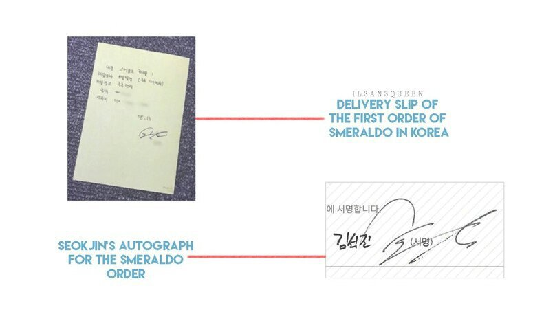

Поскольку по плану магазин «Цветы Смеральдо» должен открыться в середине сентября, я был занят планированием таможенных отправлений и способами доставки/хранения цветов. Вот почему я давно не обновлял блог. Поэтому, когда я зашёл проверить, это было как раз к окончанию ивента [флорист проводил конкурс среди читателей блога], я увидел, что многие интересуются смеральдо. Много людей участвовало в конкурсе. Большое вам спасибо.
По правде, сегодня мой счастливый день. Я получил первый заказ!!Я был на месте, где строился магазин, около полудня и какой-то молодой человек заглянул внутрь. Это прозвучит странно, но моё сердце трепетало. Это было похоже на встречу человека, которого я давно знал, но забыл.Честно говоря, мне не нужно было сегодня приезжать в магазин, но с самого утра как-то хотелось туда заглянуть, возможно, для того, чтобы встретить там этого человека.Я так же боялся, не знаю, это было так странно. Ещё удивительным было то, что пришедший человек искал именно смеральдо! Он сказал, что не знал, что это специализированный магазин, он просто пришёл, как будто его что-то притянуло. Это судьба, не так ли? В конце-концов мы договорились о доставке. Я получил свой первый заказ в Корее!
На деле из-за жары в эти дни доставить смеральдо непросто. Поэтому я сказал ему, что смогу доставить не раньше конца августа, на что тот заверил, что это отличное время, и я принял заказ без каких-либо проблем. Но, глядя на выражение лица клиента, пока он говорил, я понимал его. Это был подарок для кого-то важного. Поэтому я сказал: «Я хочу приложить карточку к смеральдо. Какую надпись на ней Вы бы хотели?» Некоторое время он колебался и написал несколько вариантов. Что он написал? Я не буду говорить, потому что это личное. Я вновь спросил его: «Но почему смеральдо?»
И он ответил: «Потому что я хочу быть хорошим человеком». Это значит, что он хочет быть хорошим для того, кому предназначены цветы, верно? После его ухода я много думал о прошлом. Что бы произошло, будь я так же искренен, как этот клиент? Но, как вы понимаете, предполагать «что, если» — совершенно бессмысленно. Я как идиот потерял её, но надеюсь, что клиент сможет выразить свои чувства и будет счастлив. Проводимый мной ивент так же направлен на донесение искренних чувств до людей, которые должны их получить. Сегодня в 10 вечера закончится приём работ, пожалуйста, ожидайте результатов с нетерпением. Я получил много историй, поэтому мне нужно время, пожалуйста, поймите это. 